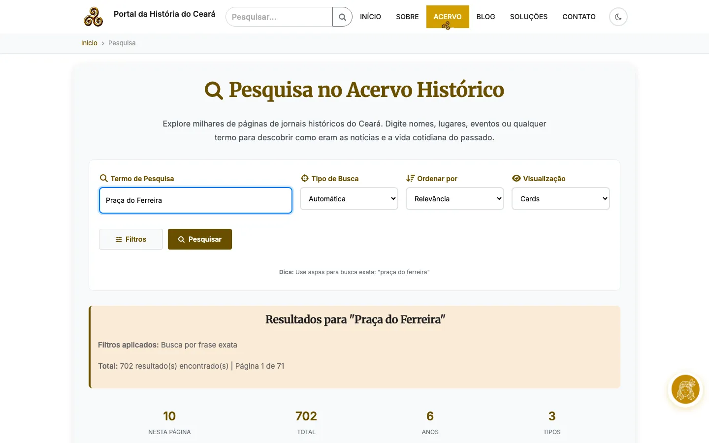
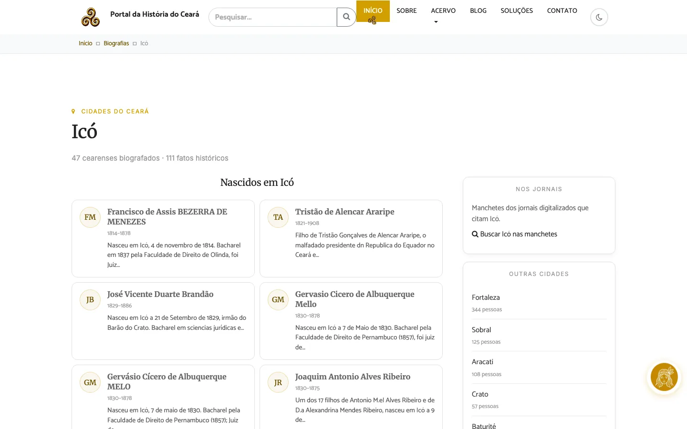

Neste artigo
Uma das perguntas mais comuns que chegam à IAcema, a assistente do Portal da História do Ceará, tem duas palavras: Barro vermelho. Sem verbo, sem contexto. A pessoa digita, olha o que voltou e vai embora. Na mesma semana, outra pessoa passa a madrugada perguntando sobre cangaço, corrige a IA quando ela erra uma data e sai com dezenas de manchetes de 1927 sobre Lampião. Mesma caixa de texto, intenções que quase não se encostam.
O acervo é um só: 2,5 milhões de manchetes, 250 mil edições de 133 jornais, fatos, biografias, livros e revistas. Quem chega é muita gente diferente. O curioso que viu um reel, o pesquisador que precisa da edição exata pra citar, o professor montando aula sobre a seca. E o grupo que mais me pega: gente procurando a história da própria família ou da rua onde cresceu.


Dois públicos, dois gargalos
Por um tempo eu olhei demais pro usuário intenso. Uma pesquisa sobre um clube social rendeu centenas de perguntas até a pessoa desistir, e dá vontade de construir tudo pra esse caso: exportação, filtros, resultado completo.
Os dados contavam outra história. A pergunta mediana tinha pouco mais de 30 caracteres, uma fatia grande tinha três palavras ou menos, e a maioria das pessoas usava a IAcema num único dia. Comportamento de caixa de busca. Essa pessoa nunca chegou perto de precisar de um CSV.
A maioria casual esbarra em descoberta e clareza, que é UX. A minoria intensa esbarra em volume e evidência, que é capacidade. Ataquei a maioria primeiro, e boa parte do que parecia feature nova já existia no código, só desconectada: o visualizador de imagem com zoom não carregava nas páginas onde o chat vive, e a busca por nome de pessoa, o tipo de pergunta com mais acerto de citação, não aparecia em lugar nenhum da interface.
A busca tem que falar a língua de 1930
O jornal antigo não escreve como a gente fala hoje. Uma pessoa pediu um "crime sem solução". A IA buscou o conceito literal, achou zero e inventou um nome vago. Os jornais da época escreviam "crime misterioso", e com esse termo tinha dezenas de manchetes. A correção foi uma regra no prompt: traduzir o conceito pra palavra de época, tentar pelo menos três termos daquele tempo antes de dizer que não achou, e só complementar com conhecimento do modelo quando houver nome, data e lugar verificáveis. A mesma pergunta passou a trazer um caso real de 1961, com citação.
Na busca dentro dos livros, "Lampião Angico" dava zero páginas, embora as duas palavras apareçam juntas em dezenas delas. Agora, quando a frase não casa, a busca procura as palavras na mesma página e avisa que mudou de modo.

Pro pesquisador, a decisão que mais pesou foi a IAcema ser um agente com ferramentas SQL, e não um RAG vetorial que devolve parágrafo bonito. A resposta cita manchete, edição e data. Edição, fato, biografia e achado ganharam um bloco "Como citar", que só usa data exata quando ela bate com a folha digitalizada.
As biografias vieram de duas obras, e uns duzentos cearenses aparecem nas duas. Meu reflexo de dev foi deduplicar, mas a regra do Prof. Gildácio Sá é que verbete de outra fonte é outro material. Então as duas entradas se ligam a uma pessoa só e a página mostra o texto das duas obras, cada uma citada pelo nome. O curioso vê uma página limpa e o pesquisador não perde a fonte.
Medir antes de redesenhar
A busca era uma das rotas mais acessadas do portal e não gravava uma linha sequer. Hoje cada busca grava o termo normalizado, com hash no lugar do IP e deduplicação pra troca de aba não inflar o volume. O painel abre com "procuraram e não encontraram", a pauta de digitalização mais honesta que existe.
Na IAcema, só nascia registro quando alguém já tinha perguntado, então "muita gente vê o chat e pouca pergunta" e "pouca gente vê e quase todo mundo pergunta" ficavam iguais no dado, com planos opostos. Subi três eventos (o botão apareceu, a pessoa abriu, a pessoa perguntou) antes de mexer na interface, de propósito: subindo junto com o redesign, eu nunca ia saber se a mudança funcionou.
O tracking de leitura mostrou que a grande maioria das visitas olha uma página só e nunca vê o menu, então cada página de edição, fato ou achado precisa se sustentar sozinha. E o relatório mensal pro stakeholder existe porque quem mantém o acervo há décadas não precisa saber o que é FULLTEXT. Precisa saber se o portal está sendo usado e onde está fraco.
Os mistérios de hoje
Os pedidos de quem procura alguém têm um padrão: nome de pessoa, às vezes só um sobrenome, e uma cidade pequena do interior. Muitas vezes a resposta existe, numa manchete que ninguém leu em setenta anos e que só ficou achável porque o OCR transformou a página em texto.
As páginas por cidade nasceram da naturalidade das biografias e juntam biografias, fatos e achados de cada município, porque quem procura família quase sempre começa pela cidade.

A vitrine Achados do Acervo reúne descobertas com a imagem da página original, link pra edição e compartilhamento por WhatsApp, que é por onde essas histórias circulam em família.
E teve uma decisão de posicionamento: não vender o portal como serviço de genealogia. O acervo tem manchete com nome de pessoa, não certidão. A frase fica mais perto de "seu sobrenome pode estar nos jornais antigos do Ceará". No técnico, a mesma honestidade: Soundex é calibrado pro inglês e Levenshtein sobre milhões de manchetes é caro demais, então o caminho viável é distância de edição contra uma lista de sobrenomes do acervo. Prometer pouco e achar é melhor que prometer "busca inteligente de nomes" e frustrar quem procura a bisavó.
Na IAcema, o que mais me orgulha é quando ela diz que não achou e explica por quê: o ano está fora da cobertura dos jornais, ou o jornal da época não registrava gente comum. Pro pesquisador, é isso que faz confiar no resto.

Full stack de Fortaleza. Ciência da Computação na UECE, cofundador e CTO do Leap Notes, tech lead do Portal da História do Ceará.